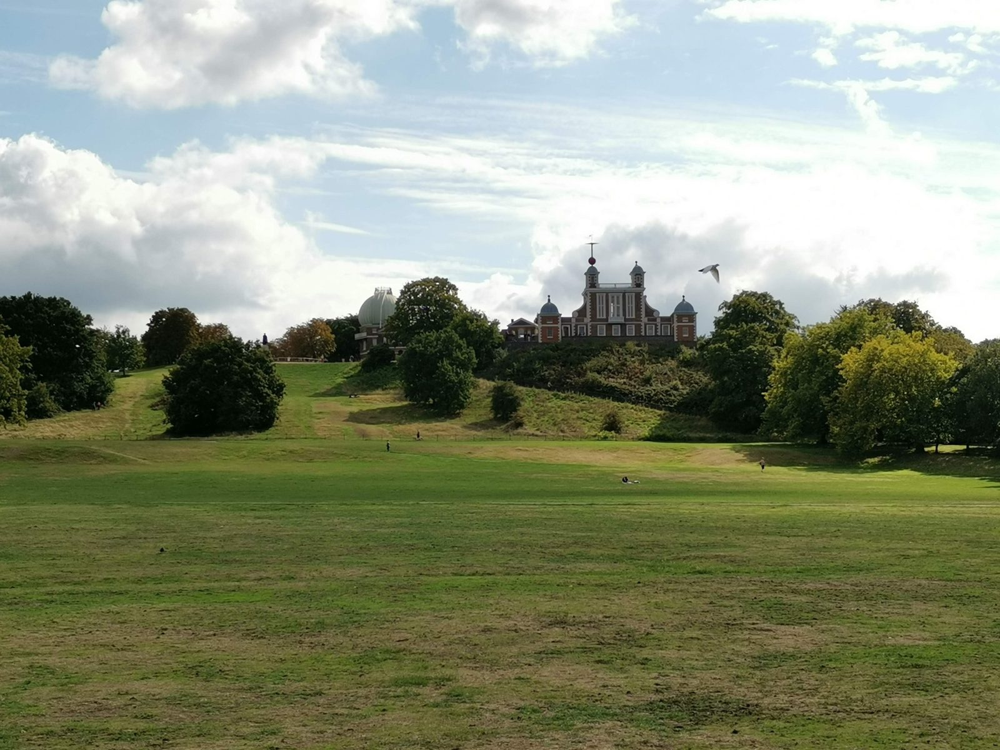
Problemet
En position på Jorden angives med to tal: breddegraden, der fortæller, hvor langt mod nord eller syd man er, og længdegraden, der fortæller, hvor langt mod øst eller vest. Breddegraden giver naturen selv: Polarstjernen står omtrent lige så højt over horisonten som ens breddegrad, og Solens højde ved middag giver den samme information med en tabel over Solens deklination. Allerede vikingerne og de portugisiske opdagelsesrejsende sejlede langs bredder.
Længdegraden er anderledes. Jorden drejer, så himlen ser ens ud fra alle steder på samme breddegrad – bare på forskellige tidspunkter. Der er intet naturligt nulpunkt mod øst og vest, og ingen stjerne, der står fast over en bestemt længde. Til søs måtte skibsførerne derfor gætte deres længde ud fra fart, kurs og tid – bestikregning – og efter uger på havet kunne fejlen være hundredvis af kilometer.
Længde er tid
Jorden drejer 360° på 24 timer, altså 15° i timen. Hvis man ved, hvad klokken er i en kendt havn i det øjeblik, Solen står højest på himlen der, hvor man er, kan man beregne sin længdegrad:
Kommer middagen for eksempel kl. 13:00 efter Greenwich-tid, ligger man 15° vest for Greenwich. Ved ækvator er 1° længde 60 sømil (111 km), og på bredden $\varphi$ er det $60\cos\varphi$ sømil. Et ur, der går 1 minut forkert, giver altså en fejl på 15 sømil (28 km) ved ækvator. Problemet var derfor i virkeligheden et spørgsmål om at medbringe den rigtige tid – og det kunne ingen af tidens ure på et gyngende skib, hvor temperaturen svinger fra tropevarme til nordlig kulde.
Tidsjævningen på stedet
I haven ved observatoriet står et skilt med kurven for tidsjævningen: forskellen mellem soltid og ur-tid i løbet af året. Når kurven ligger over aksen, kommer middagen på soluret før middagen på uret; når den ligger under, kommer den efter. Den største forskel, omkring 16 minutter, falder i begyndelsen af november, og fire gange om året er de to tider ens: omkring 16. april, 15. juni, 1. september og 25. december.

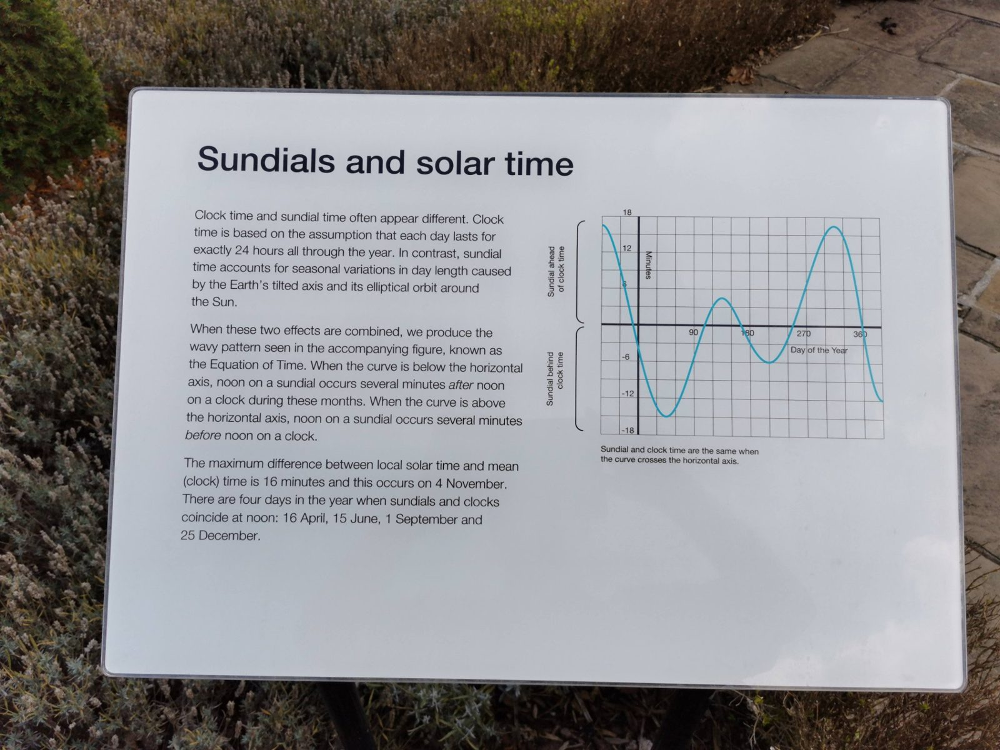

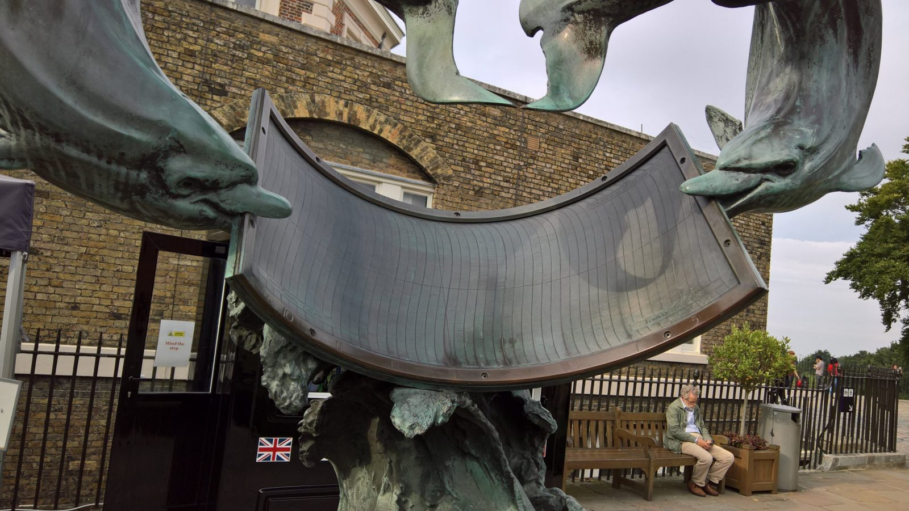
Et solur, der selv retter for tidsjævningen. Delfinsolurets timelinjer er ikke rette, men bugtede S-kurver. Bugten er netop tidsjævningen tegnet ind i skiven: Skyggen rammer på forskellige dage forskellige højder på skiven, og her er linjen flyttet de minutter, som Solen går foran eller bagefter. Derfor viser soluret direkte ur-tid. Om sommeren bruges en skive med britisk sommertid, om vinteren en med Greenwich Mean Time. Klokkeslættet aflæses midt mellem skyggerne af de to halespidser. Se mere om soluret i Solure.
Det samme princip – at Solens middag ikke kommer kl. 12 – var navigatørernes problem. En sømand, der målte den lokale middag med sin sekstant og sammenlignede med Greenwich-tiden på sit kronometer, måtte først slå tidsjævningen op i Nautical Almanac. Ellers kunne han tage fejl af sin position med op til 4°, som simulationen ovenfor viser.

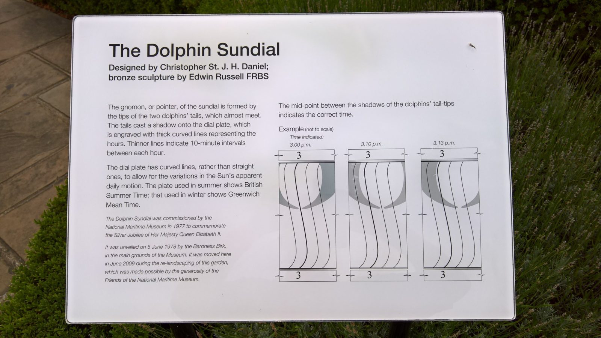
Længdegraden fra et solur på Djursland
I parken ved Sostrup Slot på Djursland står et armillarsolur: en kugle af ringe båret af en lille Atlas-figur. Det er det enkleste solur, der findes, og det viser direkte, at længde er tid. Pilen er gnomonen og peger mod himmelpolen, parallelt med Jordens akse. Det brede bånd med timetallene ligger i ækvatorplanet. Solen bevæger sig derfor 15° rundt om pilen i timen, og timetallene står med lige stor afstand på båndet – ingen krumme linjer som på delfinsoluret.

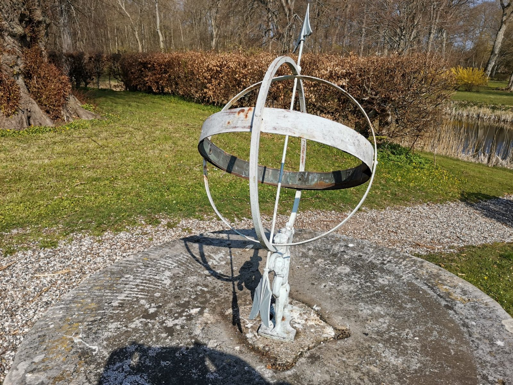

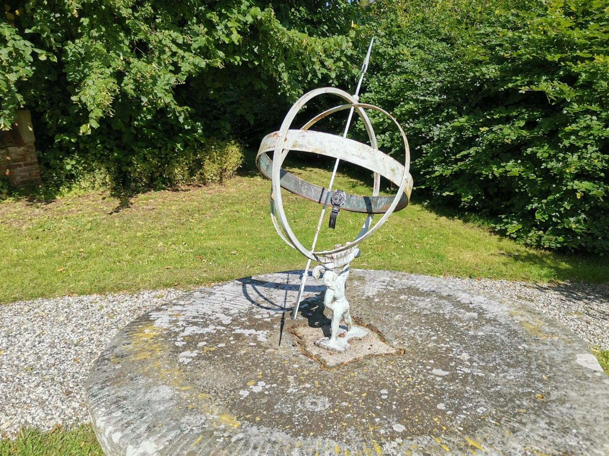

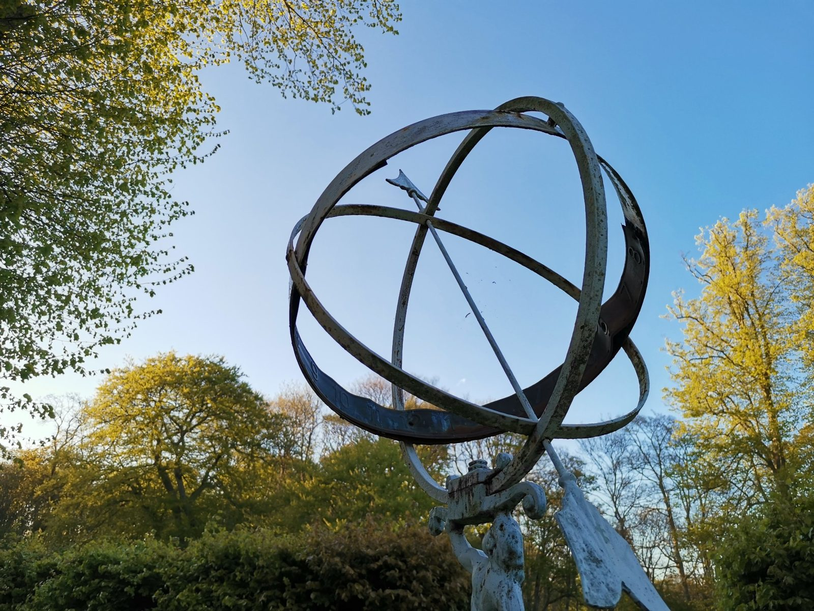
Hvor meget går soluret efter?
Sostrup ligger på 10,82° østlig længde. Dansk normaltid (CET) er middeltiden på 15° østlig længde, så Solen kommer 4,18° · 4 min/° ≈ 17 minutter senere til Sostrup. Om sommeren lægges en time til. Hertil kommer tidsjævningen $E$ (positiv, når soluret går foran):
Billederne nedenfor er taget med mit armbåndsur hængt på båndet. Klokkeslættet er telefonens, i sommertid (CEST = UTC + 2 t). Den beregnede soltid stemmer med skyggen af pilen på båndet:
| Dato | Ur (CEST) | UTC | Tidsjævning $E$ | Beregnet soltid | Pilens skygge |
|---|---|---|---|---|---|
| 7. maj 2021 | 14:16 | 12:16 | +3,6 min | 13:03 | ved 1 |
| 8. maj 2021 | 16:24 | 14:24 | +3,7 min | 15:11 | lidt efter 3 |
| 9. maj 2021 | 13:26 | 11:26 | +3,8 min | 12:13 | lidt efter 12 |
| 2. juni 2021 | 13:28 | 11:28 | +2,4 min | 12:13 | lidt efter 12 |

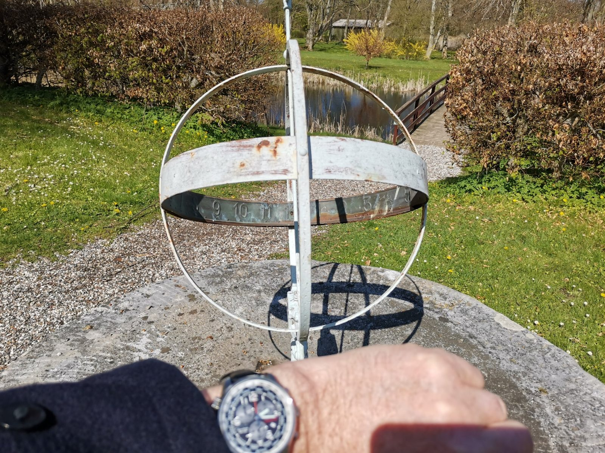

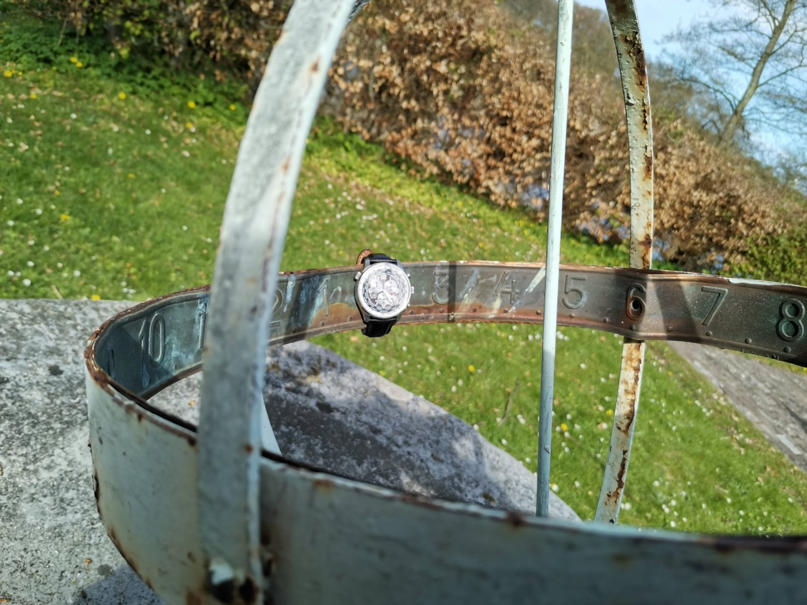

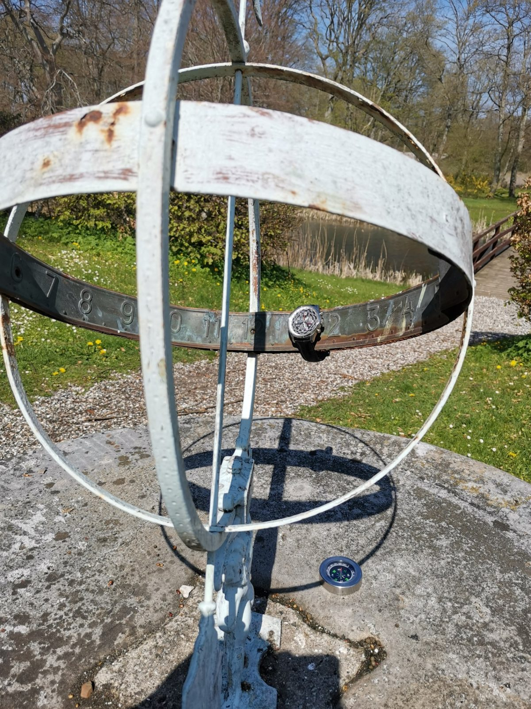

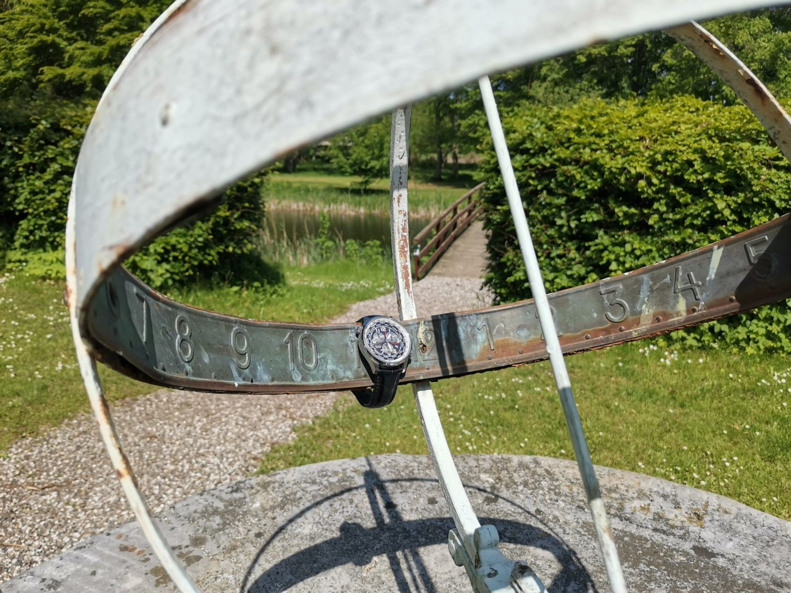
Vend det om – find længden. Den 2. juni 2021 kl. 11:28 UTC aflæser vi soluret til omkring 12:13. Trækkes tidsjævningen på 2,4 min fra, er middelsoltiden 12:10,6, altså 42,6 min efter UTC. Det giver $\lambda \approx 42{,}6/4 \approx 10{,}7^\circ$ østlig længde – kun 0,1° fra den sande værdi. Men et armillarsolur kan højst aflæses til et par minutter, og 4 minutter er 1°. På 56,5° nord er én længdegrad $111\ \text{km}\cdot\cos 56{,}5^\circ \approx 61$ km. Det er netop den nøjagtighed, Longitude Act krævede – men her har vi en GPS-præcis telefon at tage tiden fra. Det svære var aldrig at måle soltiden, men at vide, hvad klokken var i Greenwich.
Byg selv
Et ækvatorialsolur kan købes som byggesæt i krydsfiner. Timeskiven har 24 timer, pinden står vinkelret på skiven, og en gradbue sætter hældningen efter breddegraden. Peg pinden mod nord med kompasset (husk misvisningen, i Danmark et par grader øst) og indstil 56° for Djursland. Prøv selv at gentage regnestykket ovenfor med dit eget ur – og find din egen længdegrad.

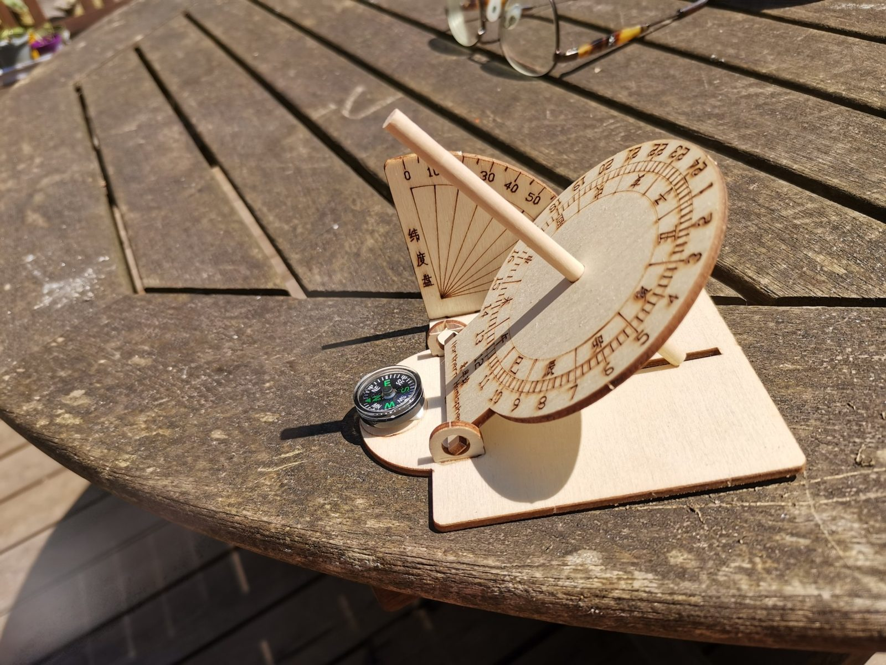
Ulykkerne
Natten til den 22. oktober 1707 (efter den julianske kalender, der stadig gjaldt i England) var en britisk flåde under admiral Sir Cloudesley Shovell på vej hjem fra Middelhavet. Navigatørerne troede, at de var sikkert vest for Bretagne. I virkeligheden sejlede de lige ind i klipperne ved Scilly-øerne ud for Cornwall. Fire skibe gik ned, og mellem 1.400 og 2.000 mand druknede – en af de største katastrofer i Royal Navys historie.
I 1741 ledte George Ansons eskadre forgæves efter øen Juan Fernández i Stillehavet, fordi navigatørerne ikke vidste, om den lå øst eller vest for dem. Mens skibet krydsede frem og tilbage, døde flere af besætningen af skørbug. Sådanne historier gjorde længdegraden til et af tidens store politiske og videnskabelige spørgsmål.
Forslagene
To hovedveje stod åbne: enten medbringer man et ur, der holder hjemhavnens tid, eller man finder et „himmelsk ur", der kan aflæses overalt. Begge ideer var gamle – den hollandske matematiker Gemma Frisius foreslog uret i 1530, og den tyske Johannes Werner foreslog Månens bevægelse blandt stjernerne i 1514 – men ingen af dem kunne gennemføres med tidens instrumenter.
Formørkelser
Hipparchos foreslog allerede i oldtiden at sammenligne det lokale tidspunkt for en måneformørkelse forskellige steder. Det virker, men måneformørkelser er sjældne – et par om året.
Jupiters måner
Galilei opdagede i 1610 Jupiters fire store måner, og deres formørkelser bag Jupiter sker flere gange om ugen på forudsigelige tidspunkter. Han tilbød metoden til Spanien og Holland. På land virkede den glimrende: Cassini og hans efterfølgere brugte den til at tegne et nyt kort over Frankrig, hvor landets vestkyst rykkede adskillige mil mod øst. Ifølge anekdoten klagede Ludvig 14. over, at hans astronomer havde kostet ham mere land end hans fjender. Men på et gyngende dæk er det næsten umuligt at holde en lang kikkert på en lille måne.
Kompasset
Kompasnålen peger ikke præcis mod nord, og misvisningen varierer fra sted til sted. Edmond Halley sejlede 1698–1700 over Atlanterhavet for at kortlægge den, i håb om at misvisningen kunne afsløre længden. Kortet blev nyttigt, men misvisningen ændrer sig over tid og er ikke entydig.
De mærkelige
Et anonymt skrift fra 1687 foreslog at tage en såret hund med om bord og hver dag kl. 12 Londontid dyppe kniven, der havde såret den, i et „sympatipulver" i London, så hunden ville hyle. I 1713 foreslog William Whiston og Humphry Ditton en kæde af forankrede signalskibe, der affyrede lyskugler ved midnat. Det forslag var dog med til at få parlamentet til at handle.
Hvorfor man byggede Greenwich
I 1674 dukkede en franskmand, Sieur de St. Pierre, op ved Charles 2.s hof og hævdede at kunne finde længden ud fra Månens stilling. Kongen nedsatte en kommission, og en ung astronom, John Flamsteed, blev bedt om at vurdere forslaget. Hans dom var klar: metoden kunne i princippet virke, men hverken stjernekatalogerne eller teorien for Månens bevægelse var tilnærmelsesvis gode nok. Fejl på et par bueminutter i Månens position giver fejl på en grad i længden.
Kongen reagerede ved at beslutte, at stjernernes positioner og Månens bevægelse skulle måles på ny, til gavn for sømændene. Den 4. marts 1675 udnævnte han Flamsteed til sin „astronomiske observator" – den første Astronomer Royal – og den 22. juni 1675 udstedte han den kongelige ordre om at bygge et observatorium i parken i Greenwich, uden for Londons røg og med frit udsyn over Themsen. Christopher Wren tegnede bygningen, der i dag hedder Flamsteed House, og den blev bygget for lidt over 500 pund – delvis af materialer fra et nedrevet tårn.
Frankrig havde gjort det samme: Pariserobservatoriet blev grundlagt i 1667 med samme formål. Flamsteed observerede i over fyrre år, ofte for egne penge og med egne instrumenter. Hans katalog over næsten 3000 stjerner, Historia Coelestis Britannica, udkom først efter hans død i 1725 – efter en bitter strid med Newton og Halley, der havde udgivet en uautoriseret udgave af hans data. Det blev grundlaget for den månemetode, hans efterfølgere udviklede.
Tidskuglen
Den røde kugle på taget af Flamsteed House er en tidskugle. Den blev sat op i 1833 og var et af verdens første offentlige tidssignaler. Kl. 12.55 hejses den halvt op, kl. 12.58 helt op, og præcis kl. 13.00 falder den. Kaptajnerne på skibene på Themsen kunne se den fra floden og stille deres kronometre, inden de stod til søs. Man valgte kl. 13 og ikke kl. 12, fordi astronomerne var optaget af at måle Solens meridianpassage ved middag. Kuglen falder stadig hver dag.

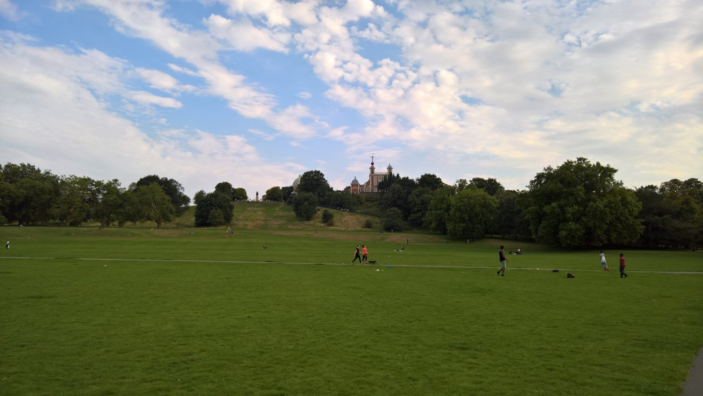
Longitude Act 1714
Efter Scilly-ulykken og Whistons og Dittons kampagne vedtog det britiske parlament i juli 1714 en lov, der udlovede en præmie for en praktisk metode til at finde længden til søs, afprøvet på en rejse til Vestindien:
| Nøjagtighed (grad af en storcirkel) | Afstand | Tidsfejl ved ækvator | Præmie |
|---|---|---|---|
| 1° | 60 sømil (111 km) | 4 min | 10.000 pund |
| ⅔° | 40 sømil (74 km) | 2 min 40 s | 15.000 pund |
| ½° | 30 sømil (56 km) | 2 min | 20.000 pund |
20.000 pund svarede til flere millioner kroner i dag. For at vinde topprisen skulle et ur efter seks ugers sejlads højst have afveget to minutter – omkring tre sekunder i døgnet. Loven oprettede også Board of Longitude, der skulle bedømme forslagene. Den kom til at eksistere i over hundrede år.
Månedistancerne: den himmelske løsning
Månen bevæger sig hen over stjernehimlen med omkring 13° i døgnet, cirka en halv grad – sin egen diameter – i timen. Afstanden mellem Månen og en klar stjerne er derfor en viser på et himmelsk ur, der er den samme for alle iagttagere. Måler en navigatør vinklen og slår op i en tabel, hvornår Månen havde netop den afstand set fra Greenwich, kender han Greenwich-tiden.
Metoden krævede altså vinkelmålinger og tabeller med en nøjagtighed på omkring ét bueminut. Tre ting gjorde det muligt i 1700-tallet: John Hadleys spejloktant (1731), der gjorde det muligt at måle vinkler præcist på et gyngende skib; den tyske astronom Tobias Mayers månetabeller (1755), bygget på Eulers teori; og Flamsteeds og hans efterfølgeres stjernepositioner. Den femte Astronomer Royal, Nevil Maskelyne, afprøvede metoden på en rejse til St. Helena i 1761 og udgav fra 1767 hvert år Nautical Almanac med forudberegnede månedistancer. Mayers enke fik 3000 pund af Board of Longitude.
Metoden virkede, men en navigatør skulle bruge omkring fire timers regning for at korrigere målingen for refraktion og parallakse – og den kunne kun bruges, når Månen var synlig og ikke for tæt på Solen.
Harrisons ure: den mekaniske løsning
John Harrison (1693–1776) var snedker fra Lincolnshire og havde ingen formel uddannelse. Han havde bygget ure af træ med næsten friktionsløse lejer af det olieholdige pokkenholt. I 1730 rejste han til London med en plan for et søur, og urmageren George Graham lånte ham penge til at bygge det.
H1 (1735)
Et stort ur med to vægtstænger, der svinger modsat hinanden, så skibets bevægelser ophæver sig. Det klarede en prøvetur til Lissabon i 1736 godt.
H2 og H3 (1739–59)
Harrison brugte næsten tyve år på H3 og opfandt undervejs bimetalstrimlen, der udligner temperaturændringer, og rullelejet med bur, som stadig bruges i kuglelejer.
H4 (1759)
Et lommeur med en diameter på 13 cm og en hurtigt svingende balance. På en prøverejse til Jamaica i 1761–62 afveg det kun fem sekunder på 81 dage. På en ny prøve til Barbados i 1764 var fejlen 39 sekunder på 47 dage – omkring 10 sømil, langt under kravet.
Kampen om præmien
Board of Longitude, hvor Maskelyne var medlem, krævede, at Harrison afslørede konstruktionen, og at andre kunne kopiere uret. Først i 1773, efter at kong George 3. personligt havde afprøvet hans H5 og grebet ind, gav parlamentet ham 8.750 pund. I alt fik han omkring 23.000 pund, men aldrig den officielle præmie.
Urmageren Larcum Kendall lavede en kopi af H4, K1, som James Cook tog med på sin anden rejse til Stillehavet (1772–75). Cook kaldte den sin trofaste ven. I 1800-tallet blev kronometre så billige, at de blev standardudstyr på alle skibe, og månedistancerne gik af brug. Fra begyndelsen af 1900-tallet kunne skibe få tidssignaler med radio.
Alle fire ure står i dag i Harrison-galleriet i Flamsteed House. H1, H2 og H3 går stadig og bliver trukket op hver dag. H4 holdes stille for ikke at slide på mekanismen.

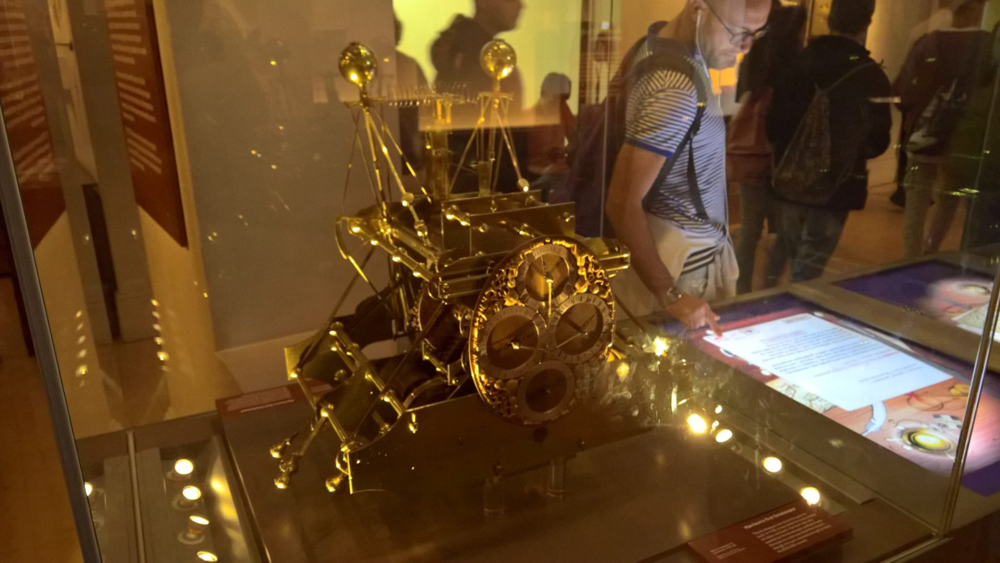

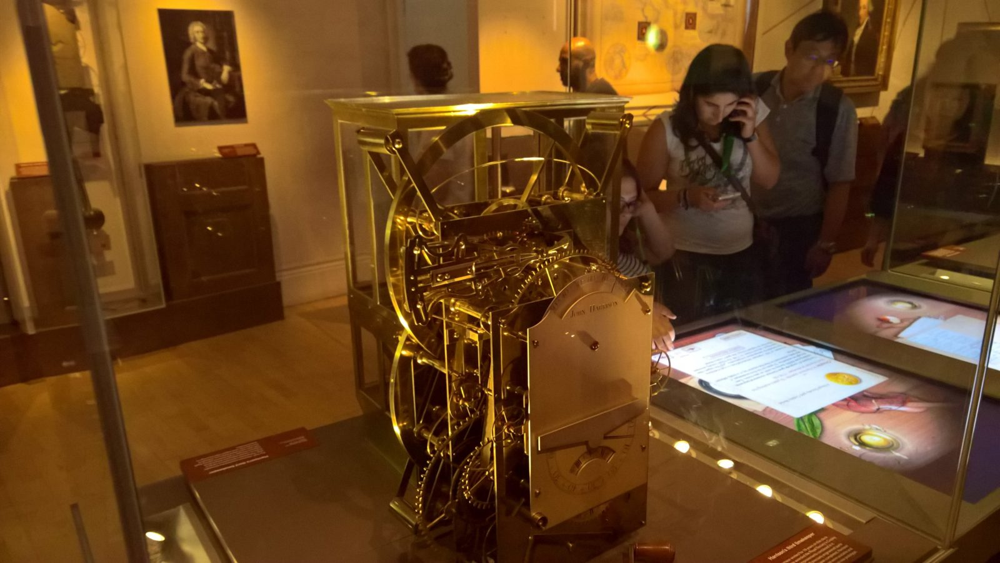

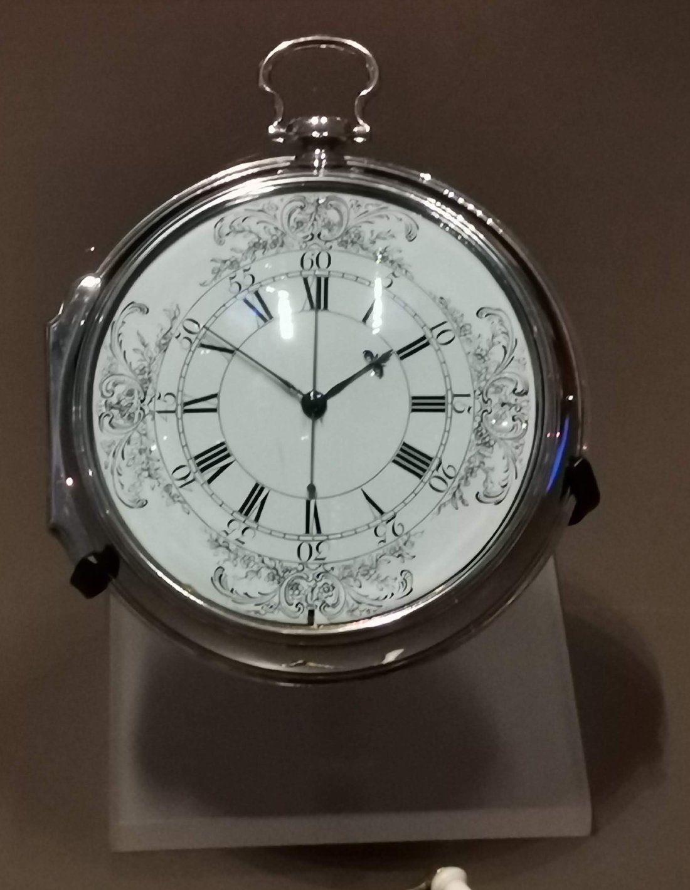

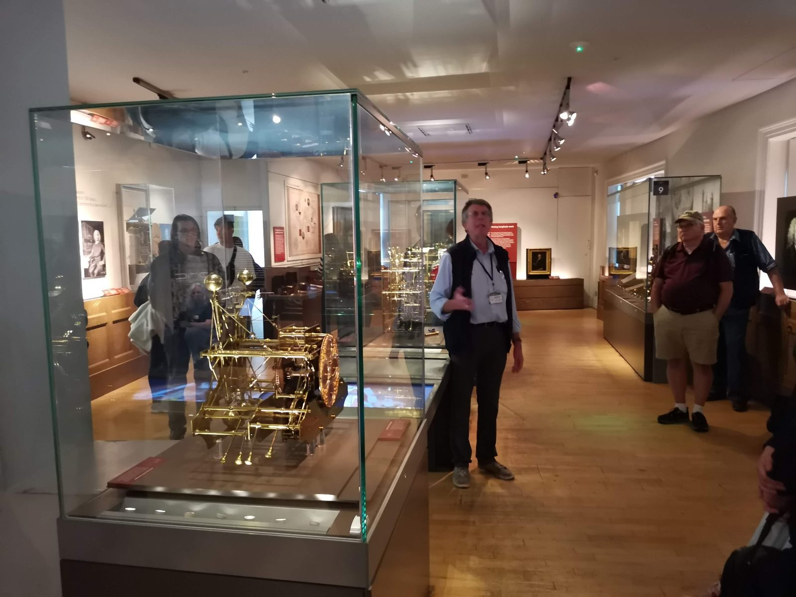
Simulation: hvor godt skal uret være?
Et ur, der går $r$ sekunder forkert i døgnet, har efter $n$ døgn akkumuleret en fejl på $rn$ sekunder. Hvert sekund svarer til 15 buesekunder, altså en kvart sømil ved ækvator.
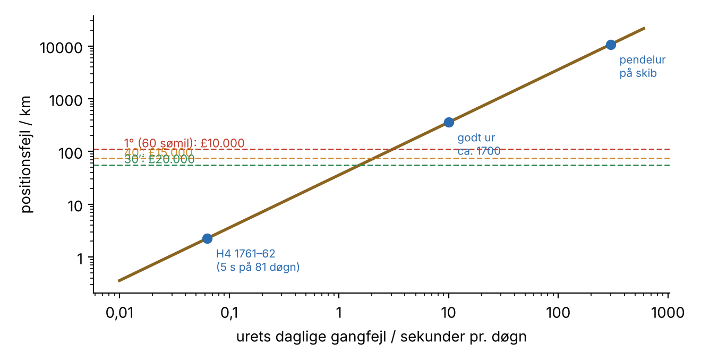
Nulmeridianen
Alle lande regnede længden fra deres egen hovedstad eller observatorium: Paris, Cadiz, Ferro på De Kanariske Øer, København. Men fordi briterne udgav Nautical Almanac med Greenwich som nulpunkt, brugte de fleste søkort efterhånden Greenwich. I 1851 indstillede den syvende Astronomer Royal, George Airy, en ny transitcirkel – et teleskop, der kun kan dreje i meridianplanet – og dens linje blev nulmeridianen.
Ved den internationale meridiankonference i Washington i oktober 1884 stemte 22 lande for Greenwich, ét imod (San Domingo), og Frankrig og Brasilien undlod at stemme. Frankrig brugte Paris-meridianen på sine kort indtil 1911. Greenwich-tiden, som de britiske jernbaner allerede brugte, blev til Greenwich Mean Time (GMT) og senere til den koordinerede verdenstid UTC.
Fra 1852 blev Greenwich-tiden sendt ud med telegraf. Signalet styrede også Shepherd Gate Clock ved observatoriets port, det første ur, der viste Greenwich-tiden for offentligheden. Det har en 24-timers urskive, så kl. 13 står forneden og midnat øverst, og det viser stadig GMT, også om sommeren.
Skærmbilledet til højre er taget med min egen telefon, stående på linjen. Den viser 51° 28′ 40,4″ N og 0° 0′ 5″ W. Ved Greenwichs breddegrad er ét buesekund i længde $30{,}9\ \text{m}\cdot\cos 51{,}48^\circ \approx 19\ \text{m}$, så 5″ svarer til
Telefonen angiver selv en usikkerhed på 33 m, og visningen er afrundet til hele buesekunder (±10 m). Forskellen på omkring 100 m er altså reel og ikke målestøj. Telefonen har på et øjeblik løst det problem, som kostede Harrison et helt liv – og afsløret, at selv nulpunktet er en definition.

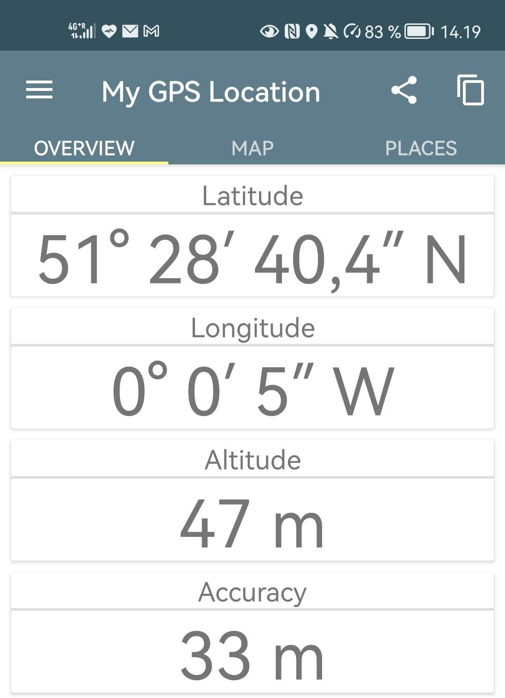
I dag: GPS
Det amerikanske Global Positioning System består af omkring 30 aktive satellitter i baner 20.200 km over Jorden, fordelt så der altid er mindst fire over horisonten. Hver satellit har atomure og udsender hele tiden sin position og det nøjagtige tidspunkt. Modtageren måler, hvor lang tid signalet har været om at nå frem, og dermed afstanden til hver satellit. Med fire satellitter kan den løse fire ligninger med fire ubekendte: de tre koordinater og fejlen på modtagerens eget billige ur.
Det er Harrisons princip vendt om: i stedet for at tage et præcist ur med om bord sender satellitterne den præcise tid ned. Fordi lyset tilbagelægger 30 cm på et nanosekund, skal urene være utroligt nøjagtige – og relativitetsteorien skal med. Satellitternes ure går 7 µs langsommere i døgnet på grund af farten (speciel relativitet), men 45 µs hurtigere, fordi tyngdefeltet er svagere deroppe (almen relativitet). Netto 38 µs i døgnet. Uden korrektion ville positionen drive omkring 11 km om dagen.
GPS var et militært system. Frem til maj 2000 blev civile signaler bevidst forringet til omkring 100 meters nøjagtighed. I dag giver en almindelig telefon nogle få meters nøjagtighed, og med korrektionssignaler (RTK) kan landmålere nå centimeter. Rusland har GLONASS, EU har Galileo, og Kina har BeiDou; moderne modtagere bruger dem alle.
GPS’ grænser
Svage signaler
Signalet fra en GPS-satellit har ved jordoverfladen en effekt på omkring $10^{-16}$ watt – svagere end baggrundsstøjen. Det trænger dårligt gennem tage, tunneler og tæt løv, og i gader mellem høje huse kastes det tilbage fra facaderne (multipath), så positionen kan springe titals meter.
Atmosfæren og Solen
Ionosfæren forsinker signalet med en mængde, der afhænger af solaktiviteten. Under kraftige solstorme – som i maj 2024 – kan nøjagtigheden falde markant, og præcisionslandbrug og fly har mærket det.
Jamming og spoofing
Fordi signalet er så svagt, kan en sender på jorden overdøve det (jamming) eller udsende falske signaler, så modtageren tror, den er et andet sted (spoofing). I Østersøen har der siden 2022 været omfattende forstyrrelser af skibe og fly, som myndighederne i flere lande tilskriver Rusland. I august 2026 meldte danske myndigheder om rekordmange forstyrrelser omkring Bornholm. Lignende problemer kendes fra Mellemøsten og Hormuzstrædet.
Afhængigheden
GPS bruges ikke kun til navigation, men også til tid: mobilnet, elnet og finansielle transaktioner synkroniserer deres ure med satellitterne. Et længere udfald ville ramme langt mere end bilernes navigation.
Reserveløsningerne
- Inertinavigation med gyroskoper og accelerometre kræver ingen signaler udefra, men fejlen vokser med tiden. Se Gyroskopet og tippetoppen.
- Terrestriske radiosystemer som eLoran sender langt kraftigere signaler fra jorden. De er svære at jamme over store områder, men har været diskuteret i årtier, uden at Europa har bygget et fælles system.
- Astronavigation med sekstant og Nautical Almanac er stadig pensum for mange søofficerer, og flere flådeskoler har genindført den, netop fordi GPS kan forstyrres. Månedistancerne bruges ikke længere – et kronometer er i dag billigt – men princippet fra 1700-tallet er det samme.
Længdegradsproblemet er altså ikke helt løst for evigt. Det er blevet til et spørgsmål om at have mere end én måde at kende tiden på.
350 år: Greenwich 1675–2025
I 2025 fyldte observatoriet 350 år. Royal Mail udgav den 12. juni 2025 seks frimærker, der fortæller historien i årstal: Flamsteed House (1676), Airys transitcirkel, der definerer nulmeridianen (1851), Shepherd Gate Clock (1852), Greenwich som nulmeridian (1884), det store refraktorteleskop (1893) og Annie Maunder-teleskopet til astrofotografi (2018). Royal Mint udgav en 2-pundsmønt, der viser nulmeridianen og urskiven fra Shepherd Gate Clock. På kanten står observatoriets formål fra 1675: Perfecting the art of navigation.

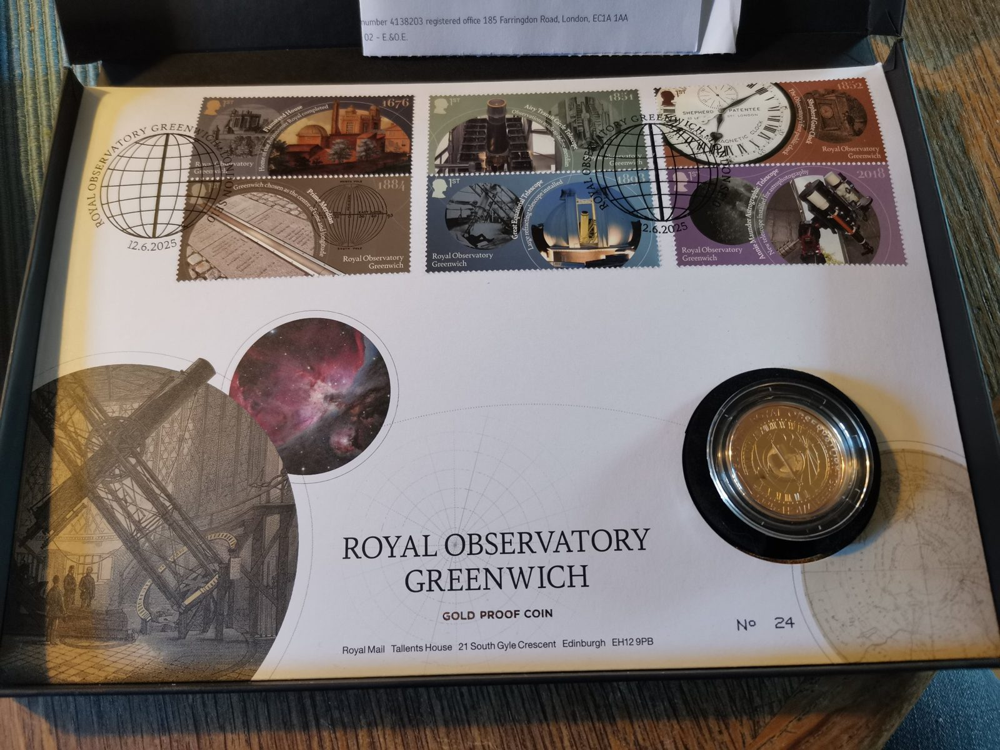

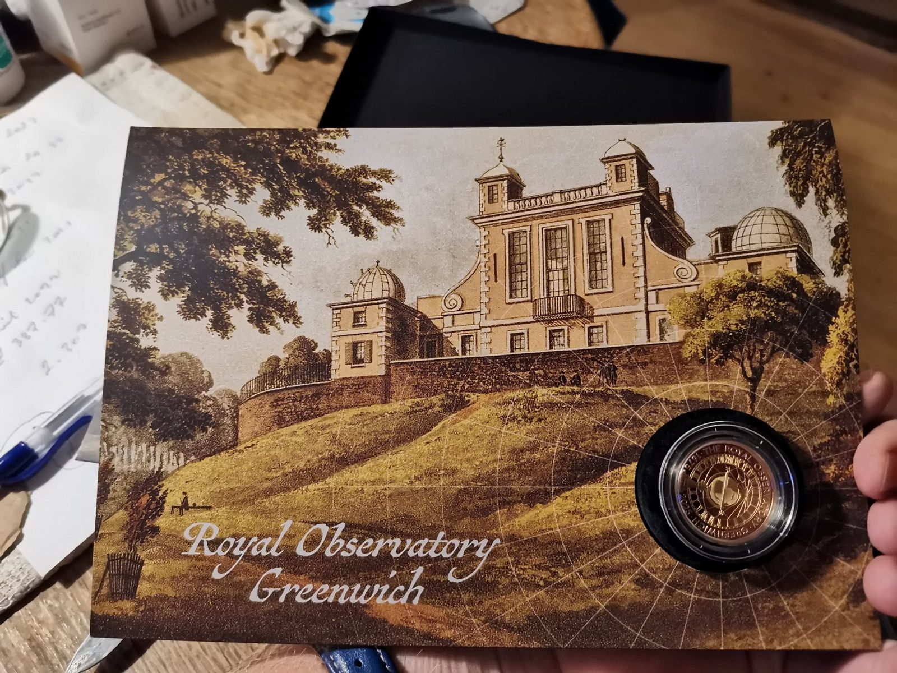

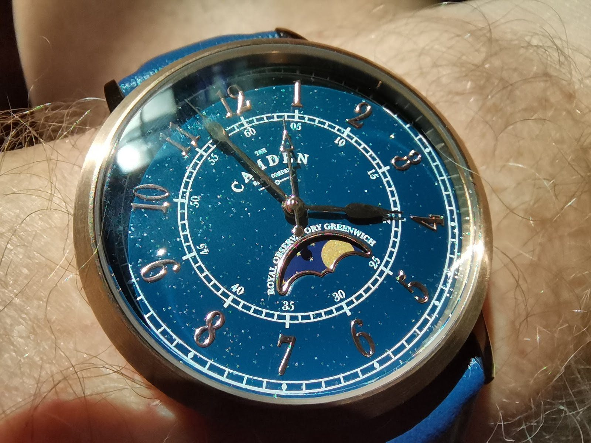

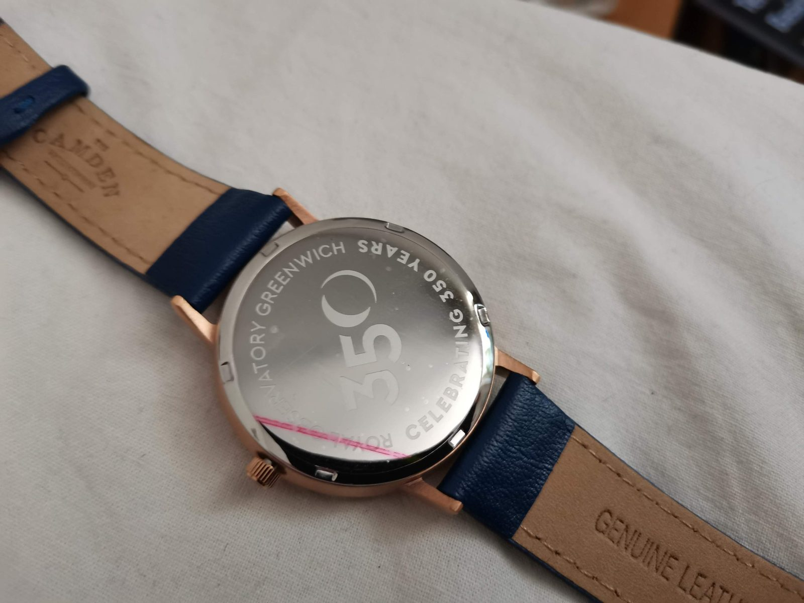
Læs mere
- Dava Sobel: Longitude (1995; da. Længdegraden)
- Derek Howse: Greenwich Time and the Discovery of the Longitude (Oxford 1980)
- Richard Dunn og Rebekah Higgitt: Finding Longitude (Royal Museums Greenwich 2014)
- Rebekah Higgitt og Richard Dunn (red.): Navigational Enterprises in Europe and its Empires, 1730–1850 (2016)
Se også biografierne af Galilei, Cassini, Huygens, Hooke, Newton og Thomas Young, der var sekretær for Board of Longitude, samt Solure og tidsjævningen.